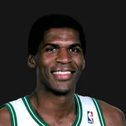

Oldest living player from every franchise
32 of the 45 franchises have a living former player. Earlier names and cities count with the franchise.
Current franchises

Every franchise, including defunct ones
★3 = number of NBA All-Star selections · HOF = Naismith Basketball Hall of Fame